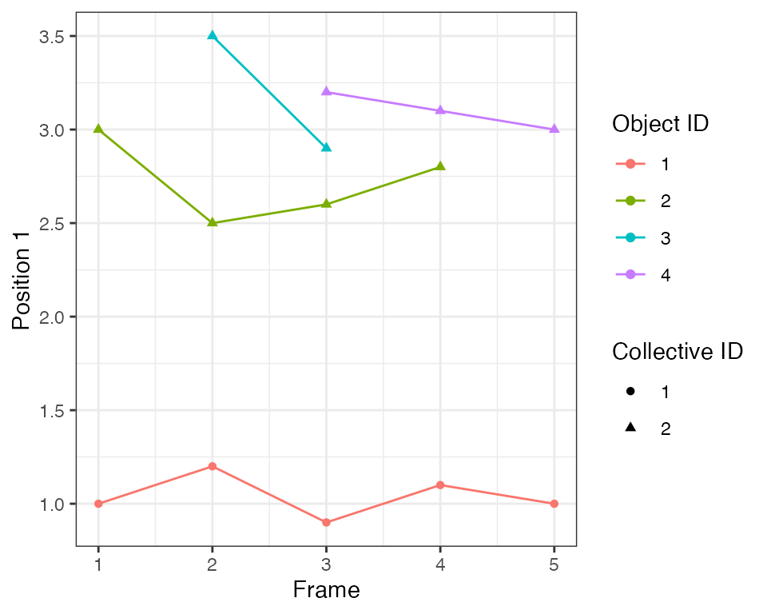

Intro
Automated Recognition of Collective Signalling (ARCOS) is an R package to identify collective spatial events in time series data. The associated publication is available on bioRxiv.
The software identifies and visualises collective protein activation in 2- and 3D cell cultures over time. Such collective waves have been recently identified in various biological systems. They have been demonstrated to play an important role in the maintenance of epithelial homeostasis (Gagliardi et al., 2020, Takeuchi et al., 2020, Aikin et al., 2020), in the acinar morphogenesis (Ender et al., 2020), osteoblast regeneration (De Simone et al., 2021), and in the coordination of collective cell migration (Aoki et al., 2017, Hino et al., 2020).

Collective ERK activation due to apoptosis in MCF10A WT cells
Despite its focus on cell signalling, the framework can be also applied to other spatially correlated phenomena that occur over time in an arbitrary spatial dimension.
Implementations
This repository covers the R implementation. For other implementations check:
- arcos4py, a Python implementation written by Benjamin Grädel.
- arcos-gui, a plugin with GUI for napari image viewer; written by Benjamin Grädel. See a YouTube demo.
Documentation for the entire ARCOS project can be found on gitbook.

arcos-gui plugin for napari image viewer
Installation
You can install the development version from GitHub with:
# install.packages("devtools")
devtools::install_github("dmattek/ARCOS")The algorithm
The algorithm implemented in the ARCOS::trackColl
function consists of two steps:
- In every frame, objects are clustered with the dbscan algorithm.
- Clusters are linked between the frames if objects that comprise the cluster are within a threshold distance.
The RANN::nn2 function
is used to calculate nearest neighbour distances. The
dbscan::dbscan function
is used for spatial clustering.
ARCOS algorithm on a single event
The flowchart of the algorithm:
ARCOS algorithm flowchart
Functions
Main functions:
-
arcosTScreates an arcosTS object from time series data in long format stored in adata.table. Assigns relevant column names and data parameters. -
trackCollidentifies and tracks collective events.
Visualisation functions:
-
plotTracksplots a random selection of tracks in 1 or 2D. -
plotNoodle2Dcreates a noodle/spaghetti plot; a single position coordinate is plotted over time for objects during their participation in collective events. -
runCollVisvisualises collective events in an interactive shiny app.
Post-processing:
-
calcNNdistscalculates nearest neighbour distances between objects to give an idea about the search radius for spatial clustering. -
calcStatsCollcalculates basic statistics of collective events such as duration and size. -
selCollselects collective events based on their duration and size.
Export functions:
-
export2napariexports data as several files that can be imported as layers into napari image viewer. -
savePlotColl2Dsaves individual frames as images.
Measurement pre-processing:
-
interpolMeasinterpolates missing data in time series. -
histMeasplots a histogram of the measurement. -
clipMeasclips the measurement to a prescribed range or quantiles. -
binMeasde-trends, normalises and binarises the measurement in time series. -
plotBinMeasplots sample time series and visualises measurement de-trending/rescaling/binarisation. -
histTrackLenplots a histogram of track lengths. -
selTrackLenselects tracks from time series data based on their length.
Utility functions:
-
is.arcosTSchecks whether an object is an arcosTS object. -
keepSignifDigtrims numeric columns to a prescribed number of significant digits. -
genSynth2Dgenerate synthetic data in 2D with a single collective event over 8 frames. -
genRandSynth2Dgenerate a random sequence of synthetic collective events in 2D. -
loadDataFromFileloads time series data from a file and returns an arcosTS object. -
loadDataFromImagesloads time series data from images and returns an arcosTS object.
1D example
Here, 4 distinct objects are moving in 1 dimension over 5 time points. We aim to identify clusters of objects moving close to each other.
Time sequence
The minimal data in long format consists of 3 columns:
-
framewith the frame number that corresponds to the time point, -
objidwith the unique identifier of every object, -
xwith the position of the object.
dts1 = data.table(frame = c(1, 1, 2, 2, 2, 3, 3, 3, 3, 4, 4, 4, 5, 5),
objid = c(1, 2, 1, 2, 3, 1, 2, 3, 4, 1, 2, 4, 1, 4),
x = c(1, 3, 1.2, 2.5, 3.5, 0.9, 2.6, 2.9, 3.2, 1.1, 2.8, 3.1, 1, 3))
knitr::kable(dts1)| frame | objid | x |
|---|---|---|
| 1 | 1 | 1.0 |
| 1 | 2 | 3.0 |
| 2 | 1 | 1.2 |
| 2 | 2 | 2.5 |
| 2 | 3 | 3.5 |
| 3 | 1 | 0.9 |
| 3 | 2 | 2.6 |
| 3 | 3 | 2.9 |
| 3 | 4 | 3.2 |
| 4 | 1 | 1.1 |
| 4 | 2 | 2.8 |
| 4 | 4 | 3.1 |
| 5 | 1 | 1.0 |
| 5 | 4 | 3.0 |
Initiate an arcosTS object. Specify the names of frame,
object id, and positions columns. The function simply adds attributes to
the existing data.table object.
ARCOS::arcosTS(dt = dts1,
colFrame = "frame",
colIDobj = "objid",
colPos = "x")Plot the time series. Each object has a distinct identifier represented by a different colour in the plot:
ARCOS::plotTracks(dts1)Detection and tracking
In this step 3 objects at the top are grouped into a single collective event that spans 5 frames. A single object at the bottom forms a single-object event.
The most important parameter of the trackColl function
is the search radius eps, which sets the distance for:
- the
dbscanspatial clustering in a single time frame, - linking clusters between frames; clusters in consecutive frames are linked, if objects comprising them are within the threshold radius.
The minimum size of the spatial cluster is set using the
minClSz parameter, which is also passed to
dbscan. The parameter nPrev determines the
number of previous frames that are searched for collective events in
order to link them to the current frame.
dcoll1 = ARCOS::trackColl(dts1)The output contains 3 columns with the frame number, object identifier, and the calculated identifier of the collective event:
| frame | objid | collid.frame | collid | x |
|---|---|---|---|---|
| 1 | 1 | 1 | 1 | 1.0 |
| 1 | 2 | 2 | 2 | 3.0 |
| 2 | 1 | 3 | 1 | 1.2 |
| 2 | 2 | 4 | 2 | 2.5 |
| 2 | 3 | 4 | 2 | 3.5 |
| 3 | 1 | 5 | 1 | 0.9 |
| 3 | 2 | 6 | 2 | 2.6 |
| 3 | 3 | 6 | 2 | 2.9 |
| 3 | 4 | 6 | 2 | 3.2 |
| 4 | 1 | 7 | 1 | 1.1 |
| 4 | 2 | 8 | 2 | 2.8 |
| 4 | 4 | 8 | 2 | 3.1 |
| 5 | 1 | 9 | 1 | 1.0 |
| 5 | 4 | 10 | 2 | 3.0 |
Visualisation
Each trace is assigned an identifier of the collective event, which is represented by the shape of the point in the plot:

The algorithm with the default search radius eps=1.0 has
identified two collective events. One is an event with only a single
object, the latter is an event that consists of 1 to 3 objects at
different points in time.
2D example
The following synthetic dataset contains 81 objects (e.g., biological
cells) spaced on a 2D 9x9 lattice with a spacing of 1x1 length units.
Each object has an ID (column id) and can assume values 0
and 1 (column m), which correspond to an inactive
and active state. The evolution of active states takes place
over 8 consecutive time points (column t). Each object
wiggles slightly around its position.
# Generate a synthetic dataset with a single event evolving over 8 frames
dts2 = ARCOS::genSynth2D(inSeed = 7)
knitr::kable(head(dts2), digits = 2)| t | x | y | m | id |
|---|---|---|---|---|
| 1 | 0.23 | -0.16 | 0 | 1 |
| 1 | 0.88 | -0.12 | 0 | 2 |
| 1 | 1.93 | 0.08 | 0 | 3 |
| 1 | 2.96 | 0.19 | 0 | 4 |
| 1 | 3.90 | -0.04 | 0 | 5 |
| 1 | 4.91 | 0.07 | 0 | 6 |
In the plot below, grey circles correspond to inactive and black to active states of cells and their collective activation (wave) develops over 8 time points.
p1 = ggplot(dts2,
aes(x = x,
y = y)) +
geom_point(aes(color = as.factor(m)), size = 5) +
scale_color_manual(values = c("grey80",
"grey20")) +
facet_wrap(~ t, ncol = 4) +
coord_fixed(ratio=1) +
theme_void() +
theme(text = element_text(size = 20),
legend.position = "none")
p1Identify collective events
The following R code will identify the collective event and store the
result in a dcoll variable. We are interested in a
collective event comprised of active objects, hence we select
rows with m > 0. The parameter eps sets the
threshold radius for the spatial clustering (dbscan
algorithm). Here, we set eps = 2, which is enough to find
all the nearest active objects in the cluster, given the 1x1 horizontal
and vertical spacing of objects in the lattice.
# Track collective events
dcoll2 = ARCOS::trackColl(dts2[m > 0],
eps = 2.)
knitr::kable(head(dcoll2), digits = 2)| t | id | collid.frame | collid | x | y | m |
|---|---|---|---|---|---|---|
| 2 | 41 | 1 | 1 | 4.16 | 3.91 | 1 |
| 3 | 32 | 2 | 1 | 3.89 | 2.99 | 1 |
| 3 | 40 | 2 | 1 | 3.09 | 4.19 | 1 |
| 3 | 41 | 2 | 1 | 4.00 | 3.96 | 1 |
| 3 | 42 | 2 | 1 | 5.06 | 4.06 | 1 |
| 3 | 50 | 2 | 1 | 3.84 | 4.91 | 1 |
The dcoll table contains the results of spatio-temporal
clustering. Column collid stores a unique identifier of
collective event. The collid.frame column stores an
identifier of collective event that is unique only within a frame.
Visualise events
For better visualisation, we add convex hulls around collective
events using the chull function from the
grDevices package.
# Create convex hulls around collective events fro visualisation
dcollch2 = dcoll2[,
.SD[grDevices::chull(x, y)],
by = .(t,
collid)]In the following plot, objects that participate in collective events are indicated by red dots. The red polygon indicates a convex hull.
p2 = ggplot(dts2,
aes(x = x,
y = y)) +
geom_point(aes(color = as.factor(m)), size = 5) +
scale_color_manual(values = c("grey80",
"grey20")) +
ggnewscale::new_scale_color() +
geom_point(data = dcoll2,
aes(color = as.factor(collid)), size = 1) +
geom_polygon(data = dcollch2,
aes(color = as.factor(collid)),
fill = NA,
size = 1) +
facet_wrap(~ t, ncol = 4) +
coord_fixed(ratio=1) +
theme_void() +
theme(text = element_text(size = 20),
legend.position = "none")
#> Warning: Using `size` aesthetic for lines was deprecated in ggplot2 3.4.0.
#> ℹ Please use `linewidth` instead.
p2Spaghetti/noodle plot
Spaghetti/noodle plot is another useful visualisation of collective events. A single position of cell tracks is plotted over time, however cells tracks are plotted only when objects/cells participate in the collective event.
ARCOS::plotNoodle2D(dcoll2, style = 'both') +
xlab("Time [frames]") +
ylab("Position X [au]") +
theme_minimal() +
theme(legend.position = "none")Extract measurements
Growth over time
dcoll2growth = calcGrowthColl(dcoll2)
ggplot(dcoll2growth,
aes(x = tevent,
y = diam)) +
geom_line() +
geom_point() +
xlab("Time of the event [frames]") +
ylab("Diameter [au]") +
theme_bw()### Size & duration
Extract duration (totDur), total number of unique
objects involved in the event (totSz), the smallest and
largest number of objects in the event (minSz &
maxSz).
knitr::kable(calcStatsColl(dcoll2))| collid | clDur | totSz | minSz | maxSz |
|---|---|---|---|---|
| 1 | 7 | 27 | 1 | 18 |
Save frames
The code below saves individual time frames with the field of view as
png files in the frames folder located in the
current working directory.
ARCOS::savePlotColl2D(dts2, dcoll2,
outdir = "./frames",
xlim = c(-.5,9),
ylim = c(-.5,9),
plotwh = c(4,3),
imtype = "png")Individual files can be later combined into a movie using software such as ffmpeg.
For example, if you have ffmpeg installed on your
system, create an mp4 movie at 2 frames/second and a
520x420 pixel resolution by typing the following line in the command
line:
ffmpeg -framerate 2 -i "frames/F%04d.png" -vcodec libx264 -s 560x420 -pix_fmt yuv420p frames-all.mp4